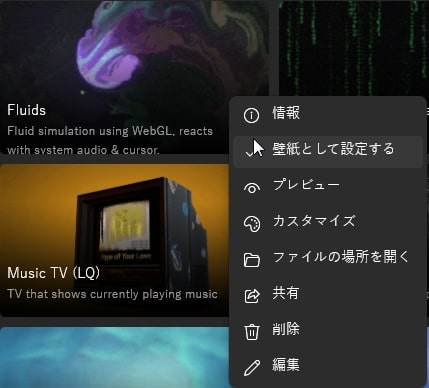
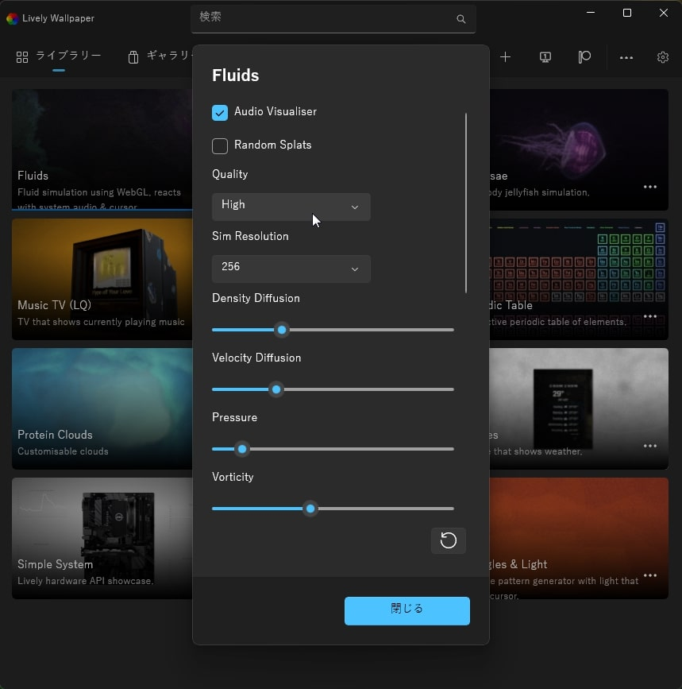
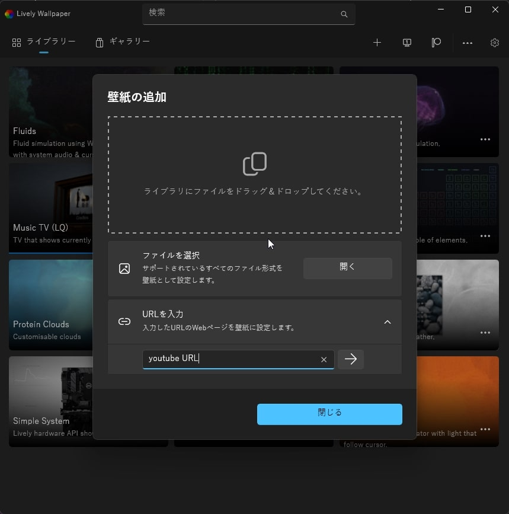

Lviely Wallpaper
背景を変えるだけでなく、youtubeやMP4を使える便利なソフト
有料のsteam版の背景変更ソフトがありますが、無料ならこれが一番お気に入りです。
まずは、画像をご覧ください。
全体図
詳細

設定

使ってみた
１つしか、紹介してませんが、残りは入れてからご自分でお試しください！
youtubeやmp4は右上の[+]を押すと、下のような画面が表示され、セットできます。

Lively Wallpaperのダウンロード先はここから！
ダウンロードボタン